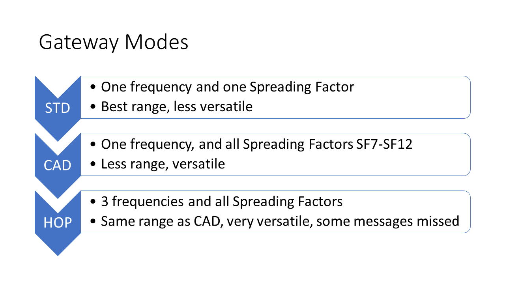

This is the 5th generation of software implementing LoRa gateway function on a platform consisting of an ESP8266 mcu and a sx1276 radio. Unlike the previous versions of the gateway, this version will listen to all available Spreading Factors on a single frequency.
For this we make used of the CAD (Channel Activity Detection) functions that are described below. The CAD mode can be configured by the user, but the user must select the CAD mode manually either in the used interface or set the CAD mode in the ESP-sc-gway.h file
Also, we have tried to integrate frequency hopping to this version of the gateway. However, this function is experimental at best and not ready for production. A lot of incoming messages are not noticed by the software. The problem is that the chip does have supporting interrupts and registers to spot activity on spreading factors for a given frequency but it does not have any tools to detect incoming messages on other frequencies (read below for detailed analysis).
Version 4.x of this single channel gateway had a number of changes compared to version 3:
The gateway sketch consists of multiple components that are found in several files. These are:
There are (at least) two seperate documents that apply to this gateway:
Datasheets for RFM95 and SX1276 should be the same. However, the HopeRF document dontains confusing information especially in the registers description are where RSSI for example (regaister 0x1B ?) is concerned.
The gateway knows 3 modes of operation:

In single channel gateway standard mode, the user can select the frequency and the spreading factor to use for reception of messages. the Gateway will behave like a real single channel gateway; just one frequency and one spreading factor can be set.
the advantage of the STD mode is, that as we know on what frequency and spreading factor we listen for new messages to arrive, the whole configuration is tuned towards this use. For example: We can receive message with a very low RSSI (-120dB or lower), something that is not possible with CAD mode of operation. Also, this mode may be a little more reliable although we have no indication that the system will miss more messages when in CAD mode.
The frequency and the spreading factor can be set as a default in the ESP-gway.h file or can be set (and changed) using the webserver interface.
Channel Activity Detection (CAD) is a function of the LoRa radio. It means that the radio detects whether another LoRa device in range is transmitting and when the receiver senses that, the device will not transmit on that channel or spreading factor to avoid a collision. During a short time before the actual transmission of data (payload) begins, each transmitter send out preamble signals indicating to other devices that a device is ready to transmit data.
Although CAD is designed to be used by nodes to detect other activity on a given frequency/spreading factor combination, it can be used by our single channel gateway as well. If the gateway can use CAD functionality to detect incoming messages on a given band, we can quickly set the receiver to that frequency and spreading factor and receive the incoming message.
Now we have CAD mode with all its advantages, why would we ever use STD mode? The answer lies in the way we use the CAD functions in our gateway code. In our code we put the chip in CAD mode and set the interrupt so that we receive an CADDONE interrupt once the radio detects activity from other nodes. This tells us that someone is starting transmission on our current frequency.
The radio will get this interrupt for its current frequency but it does not know on which spreading factor the remote node is going to send a message.
So next we check on the rssi (signal strength), we use the normal rssi of the sx1276 and subtract 157 for correction. The resulting number is the rssi of the receiver. (The package rssi (prssi) is another parameter that describes the rssi of the last package received, but it is not used in CAD mode). When we receivve a CADDONE interrupt with a high rssi, we probably will receive a message on that frequency soon. So we need to figure out at which spreading factor the sender is starting its tranmission. Therefore we will start with SF7 and move up to the next factor until we receive a CADDETECT interrupt on DIO1. The RSSI parameter that determines whether there could be a message arriving on the radio receiver can be configured in the loraModem.h file by setting the RSSI_LIMIT definition. The default value is 40, but it can be set to other values as well.
Once we receive the CADDETECT interrupt on DIO 1 we know that there is a message coming on our currect frequency and spreading factor. We then put the radio in message receve mode and wait for the RXDONE interrupt that tells us that the complete messag ehas been received and is ready in the FIFO buffer.
Should for whatever reason no message arrive within a certain time, we will receive the RXTOUT (timeout) interrupt instead telling us that there was a timeout and no message has been received.
If we have receive a message, we set the state variable so that in the next loop() iterration the message is read from the FIFO buffer.
Next, whether we receive a message or not, the mode is set to scanning again.
Using CAD mode has several advantages over STD more. Selecting CAD makes the gateway a lot more versatle and it will receive message from SF7 to SF12. And although the reception will probably not be quite as sensitive as a "real" gateway for most applications it will do the job.
This mode is very experimental, and does not work yet the way it is intended.
Using HOP mode, the system will have same functions as CAD mode but have the additional value of listening to messages on 3 frequencies as well.
The frequency hopping function is more difficult to implement than the CAD funtion. This is because CAD does work more or less automatically for a given frequency and the receiver can wait for the CADDONE interrupt telling that there might be a message waiting on one of the spreading factors for that frequency.
For frequency hopping this does not work as there is no mechanism that tells us that there might be a message arriving on another frequency than the one we're tuned in an the moment. So, if we want to implement a reliable frequency hopping function we must set a timer interrupt that fires once there is no incoing activity detected witin a certain time on the frequency.
So what is the ideal waiting period for the hopping mode, and how do we implement a timer.
re 1. The timer period shoud be long enough to determine that there is no activity on that frequency. So we should only switch when state is S_SCAN.
re 2. It is possible to connect an external clock/timer and connect it's pin(s) to one of the free GPIO pin's of the ESP8266, or it's possible to use one of the internal timers for this purpose. The first one is an option but will make the code a lot more complex and add extra hardware to the gateway. The second option internal timer is an option but only if its use does not interfere with the internal administration functions of the ESP8266 (such as Wifi handling etc.).
So taking both options into account it may be an option to just use the microsecond timer for his purpose yet do not use any interrupt processing, but instead use the loop() function itself. Timeout is about 2500 uSec before switching.
If the HOP mode works without problems, it makes our gateway more or less a "real" gateway that supports 3 frequencies and all Spreading Factors.
RSSI stands for Received Signal Strength Indicator is is measured on the receiver to determine the signal quality of the sender. Normal RSSI can be measured any time at the receiver side by reading regaister 0x1B. The SX1276/RFM95 transceiver contains a special register 0x1A that contains theaverage packet RSSI information.
The RSSI function is used by CAD to determine if we have received a message. This is not as the RFM95 is designed, after all new messages might be received that are below the noise floor and this using RSSI is not the most reliable process.
The correct RSSI sample can be computed (according to the RFM95 manual para 4.2.5.3) by adding TS_RE + TS_RSSI
In the sx1276 datasheet we find that DIO 0 and DIO 1 are used to handle CAD interrupts and for message reception. So where we would only use dio0 in the version 3.x of the gateway, we now use dio0 AND dio1 in order to detect CAD and RX Timeout evemts. This also means for users that the have to modify their gateway and set the pins correctly in the loraModem.h file.
This code assumes that we map all DIO lines onto GPIO15. The code "sees" this when dio0 and dio1 have the same value set. It then assumes that we du multiplexing of interrupts and it will do the appropriate initialisation in setup(). This can only be done by connecting the DIO 0, 1 and if necessary DIO 2 to the GPIO15 pin with a diode and this is how the Hallard PCB does it's multiplexing.
 |
| 1-ch Gateway made with Hallard PCB |
The advantage fo this interrupt sharing approach is that only one GPO line less is used leaving more GPIO pins on the ESP8266 for connecting sensors.
The Hallard board for Wemos D1 mini can be found (and ordered) from http://pcbs.io
Another PCB is made by ComResult. Actually, at least 2 versions have been defined. Multiple people in the Apeldoorn (NL) area have built this gateway.
|
| 1-ch Gateway made with the Comresult PCB |
The operation mode of the gateway and most of its settings can be controlled by the user. There are two ways to set operating parameters:
Both methods live together for a great deal. However, sometimes values set in the ESP-sc-geway.h file make that the same settings will disappear on the web interface as well. This is especially true when setting the A_SERVER paraneter in the .h file is set to 0. In this case, the webserver is not defined and its code is not included in the executable.
Most parameters that can be set are compile-time directives so that code is compiled or not based on the value of the directive in the ESP-sc-gateway.h file. This way, the code base can be kept small when functions are not used. Example: Support for Wifi Manager can be turned ON or OFF based on the setting of WIFIMANAGER in the ESP-sc-gway.h file.
#define WIFIMANAGER 0
By changing the definition to "1" the complete functionality to use Wifi Manager is included in the code and compiled. By using "0" all functions relating to this functionality is excluded from the gateway code.
Several parameters or compiler directives can be set in the .h file such as:
DEBUG 1; Initial value of the debug variable. _STRICT_CH 0; Leave this parameter on 0 unless you like to correct the frequency/sf set by the backend._CADSTATISTICS 1; This parameter detemines whether or not the gateway will report statistics on its use. This like total messages received etc. will or will not be reported. If you set this parameter to 2, it will gather statistics on SF of messages received and report through the web interface.MAX_STAT 20; Sets the number of lines in the web interface and records that are kept in memory of the last messages sucessfully received.WIFIMANAGER 0; Set to OFF by default. If you like to use WiFi manager, please set it to 1AP_NAME "<Name your gateway accesspoint>";AP_PASSWD "<Your AccessPoint password>";GATEWAYMGT 1;CFG_sx1276_radio; Let this one be defined in this version. The code will support sx1272 with probably minor modifications as well, but this has not been tested. CONFIGFILE "/gwayConfig.txt"; This parameter tells us the name of the SPIFFS file used to store the configuration data._LOCUDPPORT 1700_PULL_INTERVAL 30_STAT_INTERVAL 60_NTP_INTERVAL 3600_TTNPORT 1700_TTNSERVER "router.eu.thethings.network" _THINGPORT <Your Port>; Second backend server to send messages to. Leave undefined (comment #define out) if not used_THINGSERVER "<Your Backend DNS name>"; Second backend server to send messages to. Leave undefined (comment #define out) if not usedGATEWAYNODE 0; #if GATEWAYNODE==1
#define _DEVADDR { 0x26, 0x01, 0x15, 0x3D }
#define _APPSKEY { 0x00, 0x00, 0x00, 0x00, 0x00, 0x00, 0x00, 0x00, 0x00, 0x00, 0x00, 0x00, 0x00, 0x00, 0x00, 0x00 }
#define _NWKSKEY { 0x00, 0x00, 0x00, 0x00, 0x00, 0x00, 0x00, 0x00, 0x00, 0x00, 0x00, 0x00, 0x00, 0x00, 0x00, 0x00 }
#define _SENSOR_INTERVAL 300
#endif_DESCRIPTION "ESP Gateway"_EMAIL "<Your Email>"_PLATFORM "ESP8266"_LAT <Your LAT>_LON <Your LON>_ALT <Your ALT>A_SERVER 1; Enable the webserver. Do not touch unless you know what you are doingA_REFRESH <seconds> //seconds between webpage refresh. 0 stops automatic refreshA_SERVERPORT 80A_MAXBUFSIZE 192 _BAUDRATE 115200 // Do not touchMost parameters starting with a "_" are parameters only. Please only change these if you know what you are doing. If the parameter contains a "<xxx>" it means that you have to put your own values there. After all, it does not make sense to put my email address or GPS data in your configuration.
The remaning part of the #define settings should be to include or not include certain parts of the code based on your own preference.
Some other parameters can best be set using the webserver intrface. Exmples for this are the mode selection of CAD and HOP. The following settings cn be changed using the webserver:
bnot all combinations of parameters set are tested. There is simply not enough time to test every combination. However, when users find irritating errors in the code the corresponding files are updated and a new version is published on hithub as soon as possible.